7 of the 14 stages are rated Extreme, meaning three or fewer firms could supply each today, or one firm holds more than half, and the other 7 High, meaning four to six could.
The Chain covers each of the fourteen stages of making an AI chip in detail, one chapter per stage, in the order a chip is made, from design software to the data center. Two more chapters at the end look across all the stages, at what a chip costs and who controls the chain. To help readers learn, each chapter has a 3D model, most have an animation, and every one ends with flashcards.
Contents
The fourteen stages of the chain
ExtremeHigh
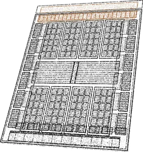
01Chip Design, EDA and IPSynopsys, Cadence and Siemens EDA make the software used to design every advanced chip. In 2025 they took over 85 percent of its $18 billion market, licensed blocks included.
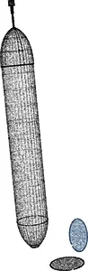
02Silicon and WafersFirms based in Japan, Taiwan, Germany and South Korea make most 300 mm wafers used for advanced chips. China makes most polysilicon, almost all of it for solar cells.
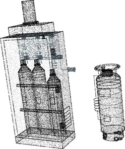
03Chemicals, Gases and PhotoresistJapanese companies held 78 percent of world photoresist sales in 2023. Supply of chip chemicals, gases and metals has been disrupted three times since 2019.
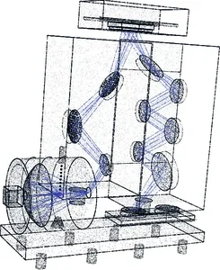
04LithographyASML, a Dutch firm, is the only maker of extreme ultraviolet scanners, the machines that print the finest layers of a chip. It sold 48 of them in 2025.
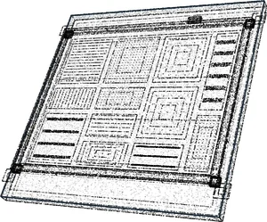
05Photomasks and PelliclesOnly three firms in the world make the blank plates for the masks used to print the finest layers of leading-edge chips. Japan's AGC and Hoya are two of them.
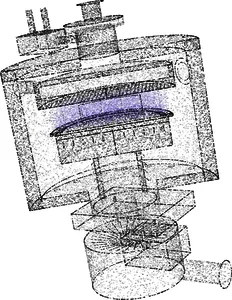
06Deposition and EtchDeposition and etch tools build a chip layer by layer. China-based toolmakers' share of deposition tools rose from 2 to 7 percent between 2019 and 2024, by CSET's count.
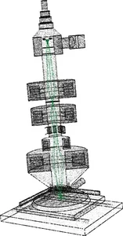
07Metrology and InspectionKLA, an American firm, held 56.8 percent of the market for tools that measure and inspect wafers in 2025, by CSET's count.
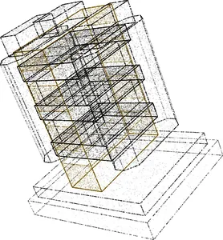
08Foundries and FabsThe newest chips need the know-how to build the newest transistors and a fab that costs tens of billions of dollars. Only TSMC, Intel and Samsung have both.
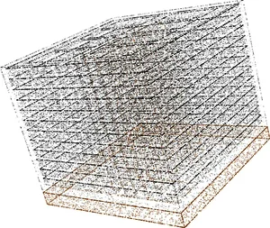
09Memory and HBMSK hynix, Samsung and Micron make nearly all high bandwidth memory (HBM), the stacked memory beside AI chips. SK hynix took 63.2 percent of HBM revenue in 2025.
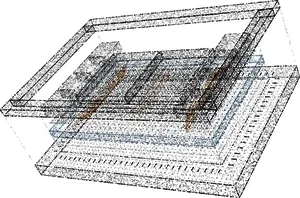
10Advanced PackagingEpoch AI estimates that in 2025 Nvidia, Google, AMD and Amazon used around 90 percent of the capacity for CoWoS, TSMC's packaging for AI chips.
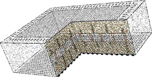
11Substrates and PCBsAjinomoto, a Japanese food company, told investors in June 2026 that it holds over 95 percent of the market for the insulating film inside high-end chip packages.
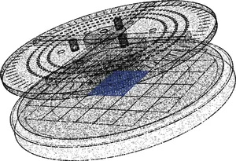
12Test and AssemblyTesting finds bad chips before they go into an expensive package. Japan's Advantest took about 65 percent of 2025 spending on chip testers, by its own estimate.
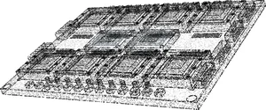
13Systems and NetworkingNvidia's and AMD's racks wire 72 AI chips together to run as one computer. Many firms can assemble the racks, but lasers for the optical links were scarce in 2026.
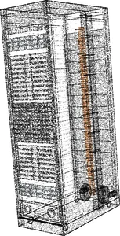
14Data Centers and PowerSemiAnalysis forecast in October 2026 that 50 GW of data center capacity would be added in 2027, about as much as the world had built through 2024. The large transformers that connect such sites to the grid commonly took three years to arrive in 2024.
Across the chain
Across the chain
These two chapters are not stages. They look across all fourteen, at what a chip costs and at the contest over who controls each stage.
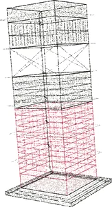
15The Economics of AI ChipsEpoch AI estimated in December 2025 that Nvidia's B200 AI chip cost about $6,400 to build, mostly for memory and packaging. Its processor silicon cost about $900.
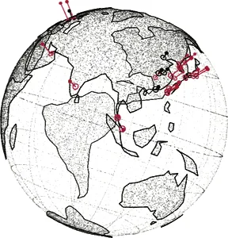
16Who Controls the ChainSince 2018 the United States has used export controls to limit China's access to advanced chips and chipmaking tools, and China has been learning to make both.